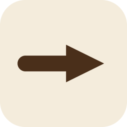
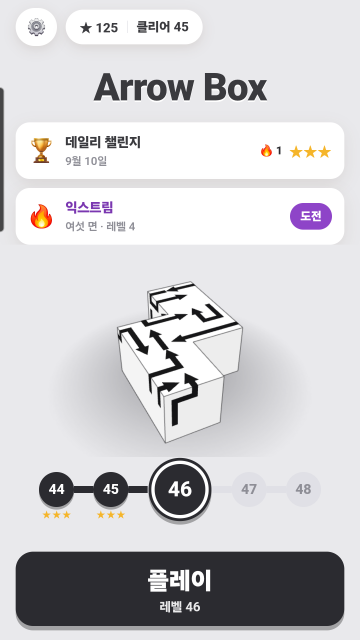
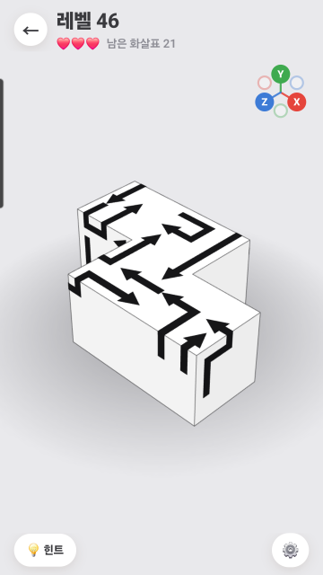
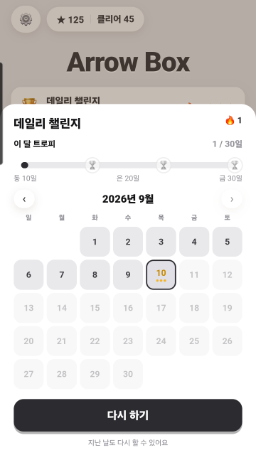
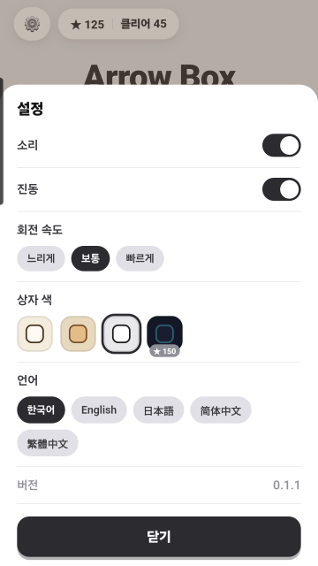

매일 새 판
날짜가 씨앗이라 그날은 누구에게나 같은 판입니다. 달력에서 지난 날도 다시 할 수 있고, 한 달에 열흘·스무날·전부를 채우면 트로피를 받습니다.
3D 화살표 퍼즐

상자에 붙은 화살표를 눌러
하나도 남기지 않고 빼내는 퍼즐.
화살표를 누르면 머리가 가리키는 쪽으로 미끄러져 상자 밖으로 날아갑니다.
막다른 길이 없습니다. 판을 거꾸로 만들기 때문에, 어떤 순서로 눌러도 못 푸는 상태에 빠지지 않습니다.
상자는 손가락으로 돌립니다. 화살표는 여섯 면 어디에나 있고, 뒷면이나 바닥에 숨은 하나를 찾아야 풀리는 판도 있습니다. 오른쪽 위 나침반의 X·Y·Z 를 누르면 그 면을 곧바로 정면으로 봅니다.
인터넷 없이도 되고, 계정도 필요 없습니다.




날짜가 씨앗이라 그날은 누구에게나 같은 판입니다. 달력에서 지난 날도 다시 할 수 있고, 한 달에 열흘·스무날·전부를 채우면 트로피를 받습니다.
여섯 면 7×7 칸에 화살표 스물몇 개. 움직일 수 있는 것은 늘 하나뿐이라, 돌리고 또 돌려 그 하나를 찾습니다.
X·Y·Z 를 누르면 그 축이 정면으로 돌아옵니다. 뒷면을 확인하려고 손가락으로 헤맬 일이 없습니다.
별을 모으면 크림·나무·흑백·네온 네 가지 상자가 차례로 열립니다.
막히지 않고 연달아 빼내면 소리가 한 음씩 올라갑니다. 몇 개나 이었는지 화면에 뜹니다.
막힌 화살표를 누르면 하나 잃습니다. 다 잃어도 이어 하거나 처음부터 다시 할 수 있습니다.